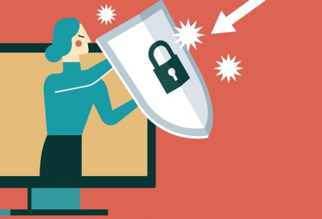

Publicação de Informações Privadas: Um alerta para Crianças e Adolescentes
Nos dias de hoje, a internet desempenha um papel fundamental na vida de crianças e adolescentes, oferecendo oportunidades para aprendizado, entretenimento e comunicação. No entanto, a crescente presença online também traz consigo riscos significativos, incluindo a publicação de informações privadas. Este artigo explora os perigos associados à divulgação de dados pessoais por jovens e oferece orientações sobre como proteger a privacidade online.
As implicações da publicação de informações privadas
A publicação de informações privadas online pode resultar em várias consequências negativas para crianças e adolescentes:
- Riscos de segurança: Quando informações pessoais, como nomes completos, endereços, números de telefone e datas de nascimento, são compartilhadas publicamente, os jovens podem se tornar alvos de criminosos cibernéticos. Essas informações podem ser usadas para fins de phishing, fraude ou assédio.
- Cyberbullying: A divulgação de informações privadas pode levar ao cyberbullying, uma forma prejudicial de assédio online. Isso pode causar sérios danos psicológicos e emocionais aos jovens afetados.
- Impacto na reputação: Conteúdo inapropriado ou informações pessoais divulgadas sem consentimento podem afetar negativamente a reputação dos jovens e prejudicar suas oportunidades futuras, como emprego e admissão em instituições de ensino.
- Violência offline: Em casos extremos, a publicação de informações privadas pode levar a situações de perigo offline, como stalking ou assédio físico.
Como proteger a privacidade online
É crucial que crianças e adolescentes estejam cientes dos riscos e saibam como se proteger online:
- Educação: Pais e responsáveis devem fornecer orientação sobre os perigos da divulgação de informações privadas e ensinar os jovens a reconhecer e evitar situações de risco.
- Configurações de privacidade: Incentive o uso de configurações de privacidade em redes sociais e outras plataformas online. Isso pode ajudar a controlar quem pode ver as informações pessoais.
- Senhas fortes: Ensine a importância de senhas seguras e a prática de não compartilhá-las com ninguém, exceto com pais ou responsáveis.
- Comunicação aberta: Encoraje os jovens a conversar sobre suas experiências online e relatar qualquer situação suspeita aos pais, responsáveis ou professores.
- Pensamento crítico: Ensine a discernir entre informações pessoais e públicas e a considerar as implicações antes de compartilhar qualquer coisa online.
A publicação de informações privadas online é uma questão séria que afeta a segurança e o bem-estar de crianças e adolescentes. A educação e a comunicação aberta desempenham um papel fundamental na proteção da privacidade online desses jovens. Ao tomar medidas para entender e minimizar os riscos, podemos ajudar a garantir um ambiente digital mais